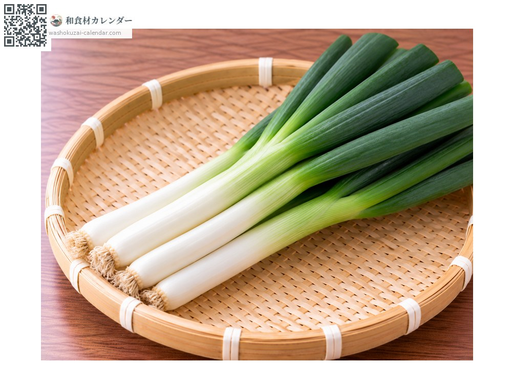
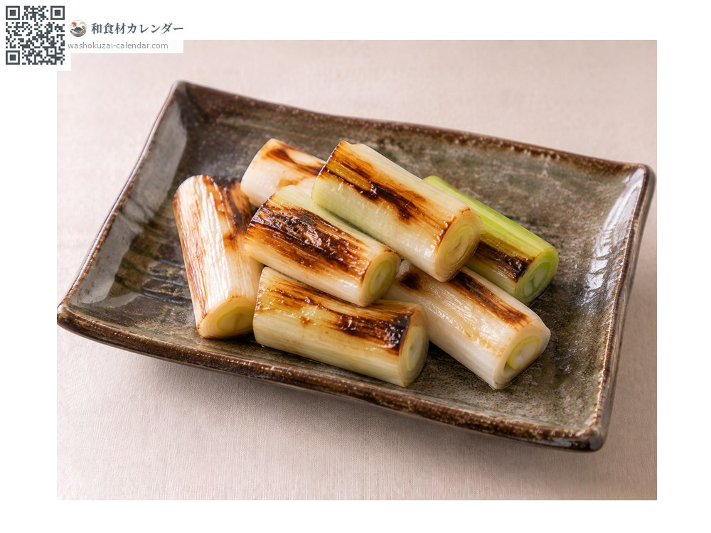
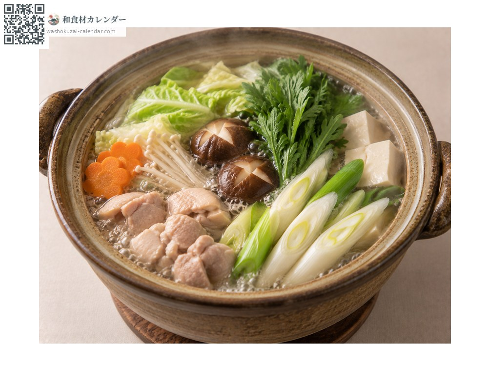
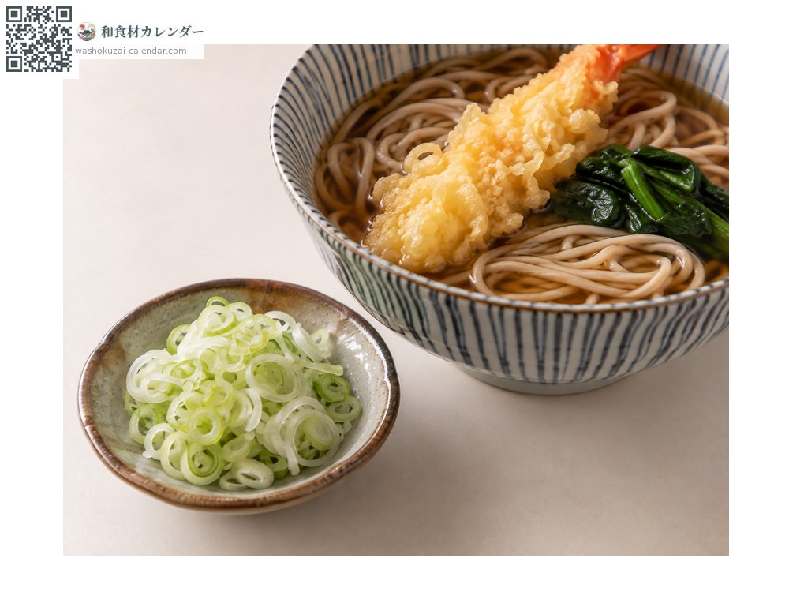
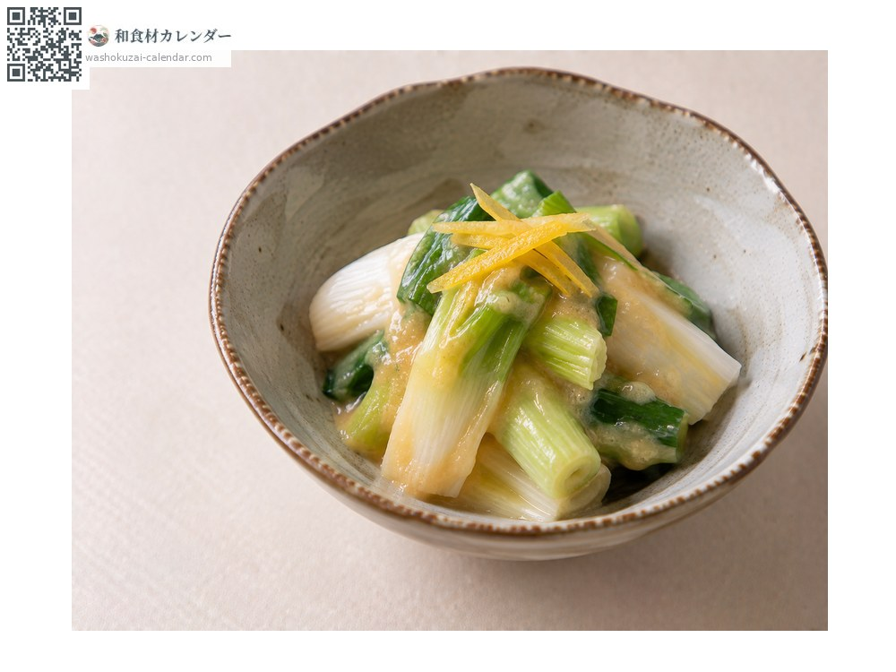

野菜
ネギ
ねぎ
別名・別表記葱、長ネギ、白ネギ、negi
旬は1月・2月・11月・12月

旬の時期
1月
2月
3月
4月
5月
6月
7月
8月
9月
10月
11月
12月
旬出回り
調理法

焼きねぎ
じっくり焼くと甘くなる。

鍋物
出汁を吸って柔らかくなる。

薬味
小口切りにして。

ぬた
酢味噌で和える。
選び方
白い部分が締まって長く、緑との境がはっきりしているもの。巻きが固いもの。
保存方法
新聞紙に包んで冷暗所に立てて。刻んだものは密閉して冷蔵か冷凍。
主な産地
豆知識
関東は白い部分を食べる根深ねぎ、関西は緑の部分を食べる葉ねぎが主流。